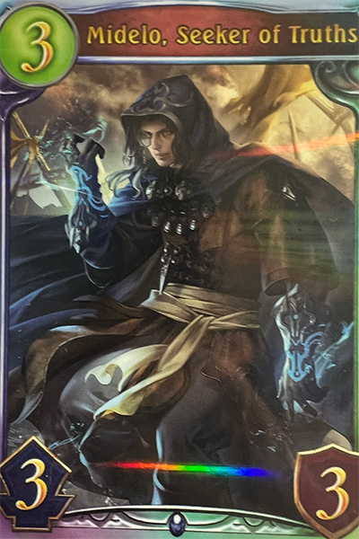
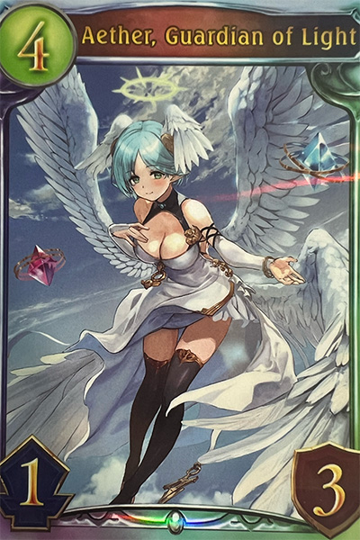
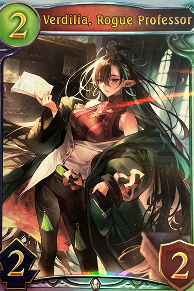
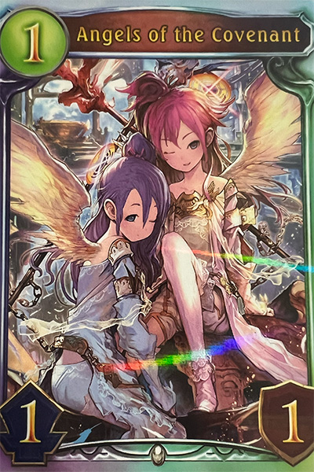
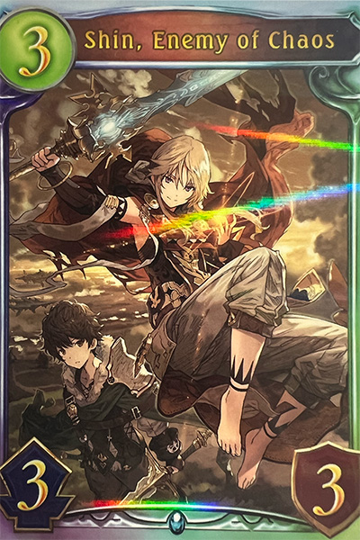
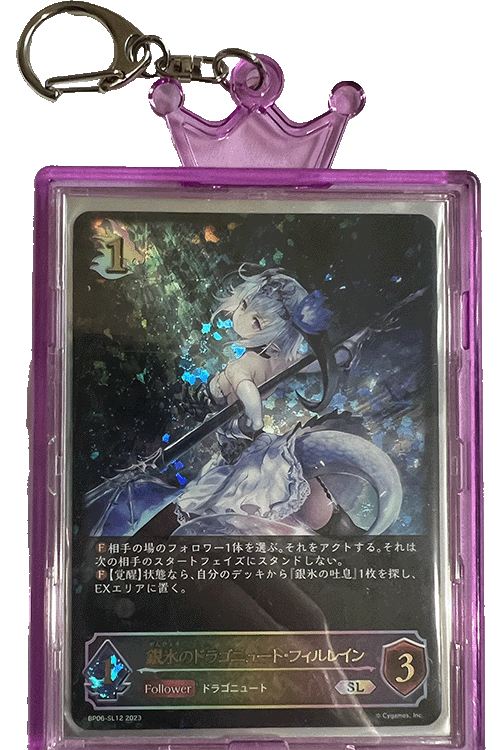
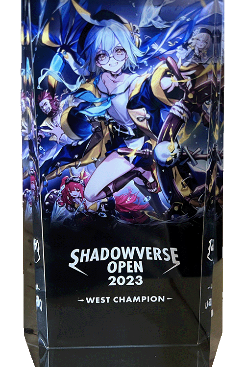
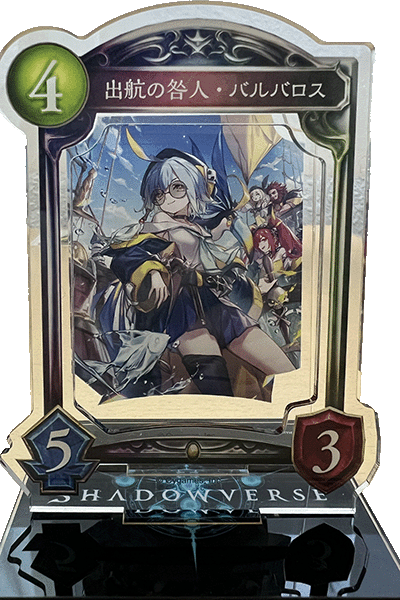

Click on cards to move them into the playing area!








I have been playing a digital card game called Shadowverse since 2021.
Behind the cards are some of my card collection and items that I have collected through the years as a card gamer. Click on the cards to reveal them!
Although the game is digital, there are printed versions of cards given out as promo cards in special ocasions.
This card is from one of the decks I used to win at Contenders Cup. I lost with this deck (4 times and on stream) embarrasingly... but all's well that ends well.
English versions of these are actually pretty rare since they're rarely given out.
This card is from another deck I used to win at Contenders Cup, and I was the only one using this deck archetype at that tournament.
I have a few sets of these promo cards as part of my card collection.
This card is from another deck I used to win at Contenders Cup, and it's still one of my favorite decks that I've ever played.
The 5 cards I picked here are all cards that I have used in a tournament before.
This card is from a deck I used to win in JCG, an online tournament that used to be held few times a week. I beat a pro player to win that tournament.
I think it's nice that there are physical items I can collect outside of the digital game.
This card was from a deck I used to get myself qualified for Contenders Cup. In hindsight, I don't think this was a very good deck choice.
This is a card from the paper version of the game that you can play irl... but I don't actually play the paper version so I got a case for the card and turned it into a keychain!
My greatest achievement as a competetive player was winning the SVO Contenders Cup in 2023. This is the trophy I got from that tournament, and I'm really proud to have this.
This is a 3D acrylic stand based on one of the in-game cards. This was one of the items I got as prize after Contenders Cup.